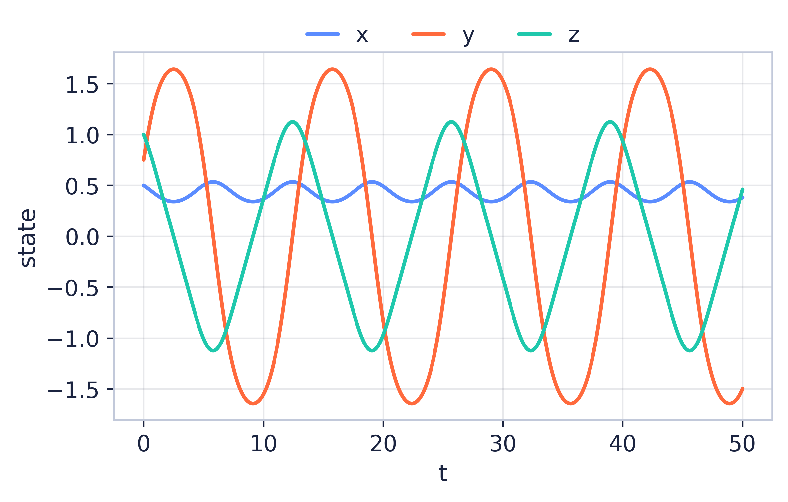
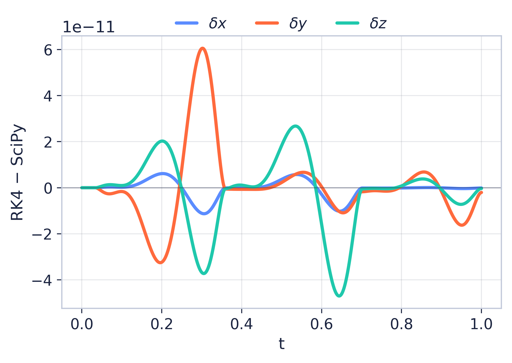

Solving the Lorenz ODE System using Optimal ANN Architectures

Introduction & Motivation
Coupled nonlinear ODEs like the Lorenz-1960 system — an early meteorological model — rarely have closed-form solutions. Classical solvers (Runge–Kutta) are accurate but mesh-dependent and re-solve step-by-step for every query. A trained network can instead learn the continuous map t → (x, y, z), yet most neural ODE work relies on physics-informed losses or operator learning.
Objectives
- Generate a trusted reference with RK4 and SciPy; cross-validate the two.
- Systematically vary depth, width, and activation (plain ANN).
- Measure accuracy vs cost: MSE, MAE, max error, training / inference time.
- Benchmark the best plain ANN against PINN / DeepONet results.
Research Questions & Gap
Gap. No prior work runs a systematic plain-ANN architecture study on Lorenz-1960; existing studies fix the architecture, use only simple ODEs, or rely on physics-informed losses.
- Can a plain ANN learn the solution from numerical data alone?
- Which depth × width × activation gives the best accuracy–cost trade-off?
- How close does it come to physics-informed baselines?
Background: The System

Complex Engineering Problem
Mapped to the CEP rubric — problem solving (depth of knowledge, conflicting requirements, depth of analysis, interdependence), activities (resources, interaction, innovation, unfamiliarity), and knowledge (natural sciences, mathematics, engineering fundamentals, specialist ML, research literature, ethics).
Methodology: Two-Phase Study
depth {1, 2, 3, 4} × width {20, 50, 100} × activation {tanh, ReLU, sigmoid, GELU, Swish}
= 60 runs · Adam fixed3 best architectures × {Adam, L-BFGS, SGD + momentum}, everything else constant.
= 9 runs69 controlled experiments — splitting the phases cleanly separates architecture effects from optimizer effects.
RK4 + SciPy
80/20 split
ANN grid
5 metrics
best
Numerical Baseline & Validation (Result)
The reference trajectory is generated by two independent solvers and cross-checked before any ANN sees it: a custom RK4 integrator (h = 10⁻³, 1001 points) and SciPy DOP853 (rtol = 10⁻¹⁰), with an 80/20 train–validation split (seed 42).

A defensible ground truth for all FYDP-II ANN training.
Conclusion & Future Work
Status (FYDP-I): research question framed, 17-paper review with an explicit gap, two-phase design (69 runs) locked, dual-solver baseline verified. No accuracy claims are made until the FYDP-II experiments produce evidence.
- Build the ANN training pipeline; run Phase 1 (60), then Phase 2 (9).
- Repeated seeds for stability; denser grids and new initial conditions.
- Direct comparison with PINN / operator-learning baselines.